Developer template editor
An editor for developer templates (.pgtemplate files) inside
pgtc. It generates the TOML header from a parameter list, assists with the Jinja syntax of the body, validates both
continuously, and renders a live preview of the resulting SQL.
A developer template has a header — TOML: name, description and parameter declarations — and a body, a Jinja template that renders to SQL; the format is specified in Writing your own templates. Any text editor can write such a file. The template editor adds dialogs for the declarations, pick lists for parameters, constructs and filters, static checks and the preview.
The editor needs no connection: a template tab opens no session. A connected server is used in two places: the preview is rendered for the version of the server selected in the object tree, and Test reads its choice lists over the tree's session on the selected database.
The template manager
opens the template manager. It has a menu item only, no
default key binding (one can be assigned: the command is
template_manager).
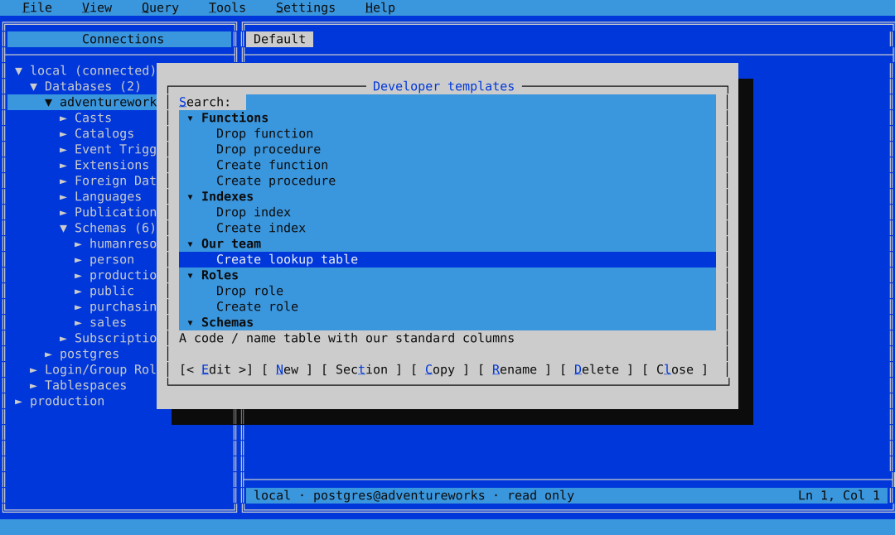
description of the selected template.The list shows the templates folder as a tree: the sections (its directories — Functions, Tables, …) and, below each, its templates. It is the tree of the F7 picker, with two differences:
- Empty sections are listed, so that a first template can be created in one. (The picker hides them.)
- The picker resolves each template to one file for the tab's server version. The manager lists every
file: a template with a version variant has one row per file; the variant's row
ends with its version folder, for example
[12_plus].
| Button | Key | Action |
|---|---|---|
| Edit | Enter, E, double click | Opens the selected file in a template tab and closes the manager. A file that is already open is not opened twice — its tab is activated. |
| New | N | Opens a tab with a new, empty template for the section the cursor is in, and closes the manager. |
| Section | T | Creates a new, empty section. |
| Copy | C | Copies the selected template to a new file name in the same section. |
| Rename | R | Renames the file of the selected template, or the directory of the selected section. |
| Delete | D | Deletes the selected template file, or the selected (empty) section, after confirmation. |
| Close | Esc, L | Closes the manager. |
The letter keys work while the list has the focus. Tab cycles between the search box, the list and the buttons; Up / Down, PgUp / PgDn move in the list.
Searching
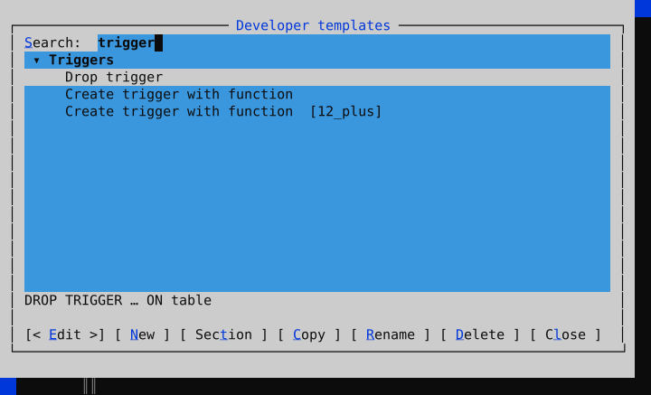
trigger typed into Search: the two trigger templates — one of them
with its variant for PostgreSQL 12 and newer.Focus Search (Alt+S, or S from the list) and type: the list is filtered to the templates whose name, description or file name contains the text.
Sections

A section is a directory below a version folder; its name is the group heading in the F7 picker.
Section asks for a name and creates the directory under default/. A nested
section is written with a slash: Tables/Partitions.
- A name must be a portable file name: no
\ / : * ? " < > |, no control characters, no leading or trailing dot. The names of version folders (default,N_plus) are reserved. - Creating a section first is optional: the Save template dialog can create one, too.
- Rename renames the section's directory in every version folder that has it.
- Delete removes a section only if its directory is empty in every version folder. Delete (or move) its templates first.
Copy, rename, delete

table_copy.Copy is the shortest way to a template of your own: copy a built-in one, then
Edit the copy. The copy is byte-identical, so its header has the same name as the
original — change it in the editor, or the picker shows two entries with the same label.
Copy and Rename ask for a file name (without
.pgtemplate). The file name is not what the picker shows — that is the name key of the
header, the Name of the template tab. A file name that already exists in the section, in any
version folder, is refused.

| A template with files in several version folders | |
|---|---|
| Copy, Rename | Act on all its files: the template remains one template with its variants. |
| Delete | Deletes the file of the selected row only — the variant in 16_plus, say, and not the file in default. |
A deleted built-in template is restored by . A deleted template of your own is not recoverable from pgtc.
If a renamed template is open in a tab, the tab follows: its next save goes to the new path.
A new template, step by step
The example is Create lookup table: a table with a code and a name column, the way a team might standardise its lookup tables. Its parameters: a schema, a table name, the length of the code column, and a flag for audit columns.
- Open , put the cursor on the target section (or anywhere, and choose the section when saving), and press N.
- A template tab opens, empty, with the cursor on Name.
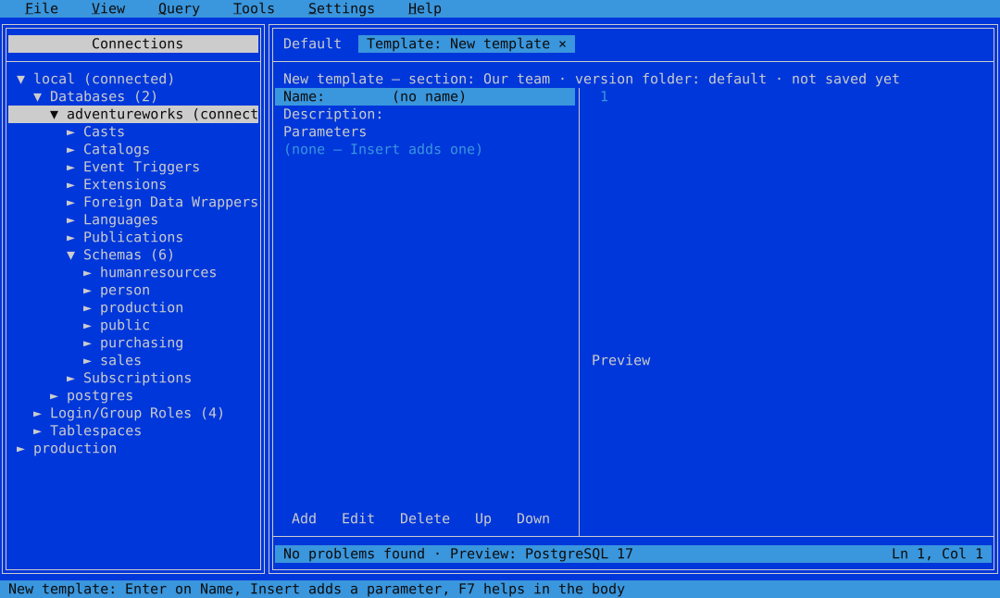
A new template: no name, no parameters, an empty body. The file bar names the section the template was created for — the one the cursor was in, in the manager — and the version folder; the first save proposes both. The bottom line of the window shows the next steps. - Press Enter and type the name and the description.
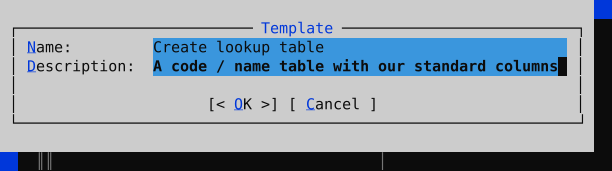
The header keys name— the label in the F7 picker — anddescription, shown under the picker's list and matched by its search box. - Declare the parameters. For each: Insert, fill in the
parameter dialog, Enter. Here:
schema(typechoice, sourceschemas),name(identifier),code_length(number, default 10),with_audit(bool). - Press Tab to move to the body, and write the SQL. Where a parameter value belongs, press
F7, choose and pick the parameter — or type the
expression yourself:
{{ name|ident }}. - Watch the preview below the body: it is the SQL the template renders to now. The status row of the tab reads No problems found — or names the problem.
- Press Ctrl+S. The first save asks for the section, the version folder and the file name.
- Press F5 to test the form as F7 will present it.
Once saved, the template is in the F7 picker of every query tab: the picker scans the folder each time it opens.
The template tab
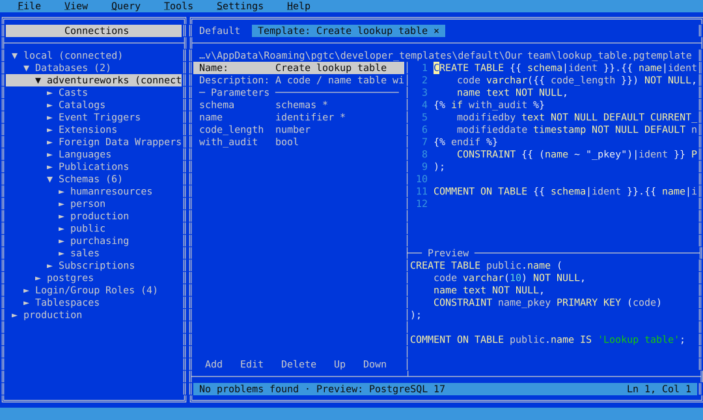
| Part | Content |
|---|---|
| File bar | The full path of the template file, with * while there are unsaved changes. A template without a file shows its destination instead: New template — section: Our team · version folder: default · not saved yet. |
| Header | On the left: Name, Description and the list of parameters, with the buttons Add, Edit, Delete, Up, Down. It can be switched to the raw TOML text. |
| Body | The Jinja template, in a SQL editor with all its keys: selection, clipboard, undo, find and replace. |
| Preview | The SQL the body renders to with sample values — or the error that prevents rendering. Read-only; text can be selected and copied. |
| Status row | The result of the checks, the server version the preview is rendered for, and the cursor position. |
The tab's label is Template: followed by the name. On a narrow terminal (fewer than about 70 columns for the tab) the header is placed above the body instead of beside it.
Moving between the parts
| Key | Action |
|---|---|
| Alt+Down | The next part: header → body → preview → header. |
| Alt+Up | The previous part. |
| Tab / Shift+Tab | The same, from the header list and from the preview. In the body (and in the raw header) Tab indents, as in every editor — use Alt+Down / Alt+Up there. |
| Ctrl+Tab, F6 | The object tree ↔ the tab, as everywhere. |
| Ctrl+R | Hides / shows the preview. |
| Alt+Shift+Up / Alt+Shift+Down | Shrinks / enlarges the preview. With the mouse: drag the line Preview. |
With the mouse, a click focuses a part; the wheel scrolls the part under the pointer.
The keys of the tab
These work in every part of a template tab:
| Key | Action |
|---|---|
| Ctrl+S | Save. |
| F5 | Test: the template in the F7 form. |
| F7 | The helper menu. |
| Ctrl+T | The header as a list ↔ as raw TOML. |
| Ctrl+W | Closes the tab (asks about unsaved changes). |
| F1 | The key bindings active in the current context. |
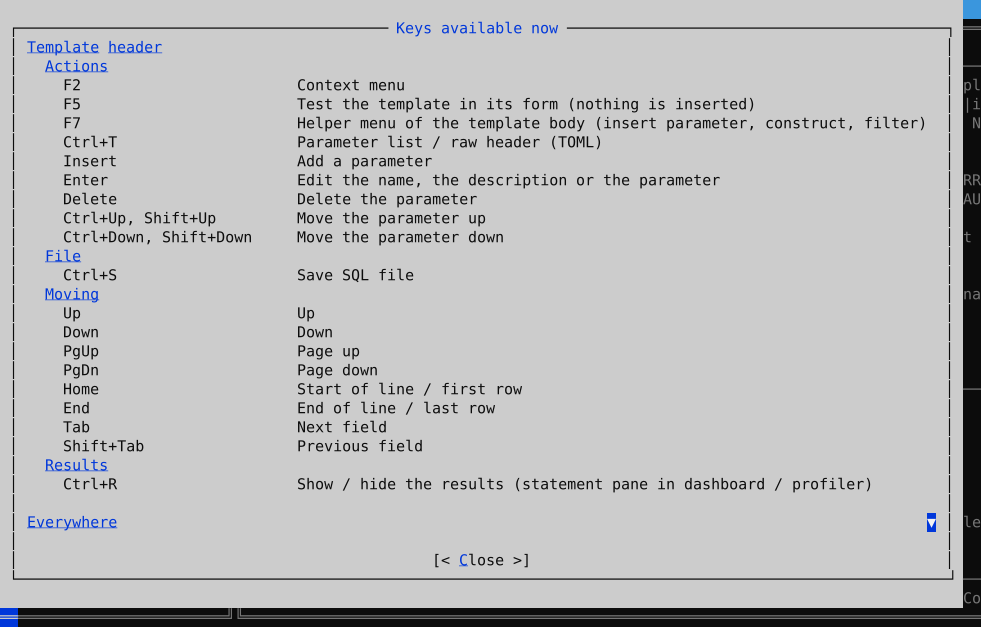
F5 and F7 are bound differently in a query tab (execute, generate SQL from a template). A template tab has no session and nothing to execute: there F5 tests the template and F7 opens the helpers.
The header list

name. Each parameter row shows the name,
the type (for a choice with a source: the source) and * if the parameter is
required.| Key | Button | Action |
|---|---|---|
| Up / Down, PgUp / PgDn, Home / End | Move the cursor. | |
| Enter | Edit | On Name or Description: a dialog with both. On a parameter: its dialog. A double click does the same. |
| Insert | Add | A new parameter, appended to the list. |
| Delete | Delete | Deletes the parameter, after confirmation — the list has no undo. |
| Ctrl+Up / Ctrl+Down (or Shift+Up / Shift+Down) | Up / Down | Move the parameter. The order of the list is the order of the [[param]] tables in the header, and of the fields in the form. |
| F2 | The context menu with the same actions. |

The list takes no text input. To edit the header as text, switch to the raw header.
Renaming a parameter does not rewrite the body: its expressions still reference the old variable. The status row reports it immediately: Not declared: old_name · Not used: new_name. Rename the variable in the body as well (find and replace: Ctrl+F).
The parameter dialog

name: a required identifier with a help text.The dialog edits one [[param]] table of the header:
| Field | Header key | Meaning |
|---|---|---|
| Name | name | The variable name in the body: {{ name }}. Letters, digits and _; unique among the parameters. |
| Label | label | The field's label in the form. Empty: the name is shown. |
| Type | type | The parameter type — see below. The dialog shows the inputs of the chosen type; values already entered are kept when the type changes. |
| Required | required | An empty value fails validation: the form marks the field with * and renders no SQL without it. |
| Default | default | The initial value of the field. For a bool: Checked by default. |
| Help | help | A hint shown at the bottom of the form while the field has the focus. |
OK validates the declaration with the rules the file parser applies: a valid, unique
name; a choice with exactly one origin of values; a list with at least one field. A
violation is reported in a message, and the dialog stays open.
The types
type | Form widget | Additional inputs of the dialog |
|---|---|---|
text | An input line; free text | |
identifier | An input line for an identifier; validated (at most 63 bytes) | |
number | An input line; must parse as a number | |
bool | A checkbox | |
choice | A drop-down list | Values from: fixed options, database objects, or a query — see below |
sql | A SQL box of 5 rows | Takes the free rows of the form (fill = true): the box grows to all the rows the form has left — for a function body, a view's query |
list | A list of rows with Add / Edit / Delete / Up / Down | The fields of a row |
A choice and its values
A choice parameter takes its values from exactly one of three origins, selected in
Values from:

source): the parameter schema lists the schemas of
the database. Source offers every built-in catalog query: schemas, tables, views,
materialized views, sequences, functions, procedures, types, user types, domains, indexes, triggers, roles
(the catalog and filter of each).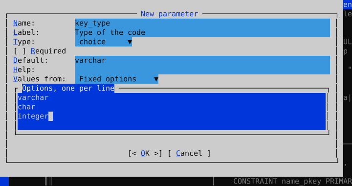
options): one value per line. Tab leaves the box.
query): a custom list. The query must be a single statement starting with
SELECT, WITH, VALUES or TABLE; its first column supplies the
values. The form runs it read-only.A source has two advantages over a custom query: the form presets it from the
object selected in the tree, and its values are schema-qualified objects rather
than strings — in the body {{ table|ident }} renders sales."Order Items", each part quoted
separately, and {{ table.schema }} / {{ table.name }} are available.
A list and its fields

columns of Create table: five fields make one row.A list parameter is a sequence of rows — the columns of a table, the arguments of a function. Its
fields are the [[param.fields]] tables of the header. The dialog of a list parameter has the list
Fields of a row and five more buttons:
| Button | Key | Action |
|---|---|---|
| Add | Alt+A | A new field, in a dialog of its own. |
| Edit | Alt+E | The dialog of the selected field. |
| Delete | Alt+D | Removes the selected field. |
| Up / Down | Alt+U / Alt+W | Move the selected field: the order of the fields in the row dialog. |
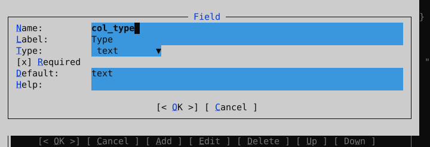
col_type, opened over the dialog of its list. A field is declared like a
parameter; only list (no nesting) and fill are not allowed in it.Esc in a field's dialog returns to the list's dialog; nothing is applied until that dialog is confirmed with OK as well.
The body and its helper menu
The body is a Jinja template: an expression {{ … }} emits a value,
a statement tag {% … %} controls flow (if, for, set),
{# … #} is a comment. Type them — with autocomplete for the variable names
— or press F7.

| Item | Action |
|---|---|
| A list of the declared parameters; the chosen one is inserted at the cursor in the form its type calls for. | |
A list of Jinja constructs — if, for, version and feature tests — inserted at the cursor or wrapped around the selection. | |
A list of filters — |ident, |upper, … — appended to the expression the cursor is in. | |
| The selected text becomes the default of a new parameter whose expression replaces it. | |
| A copy of the template in a version folder. | |
| Ctrl+T: the header as text. | |
| F5: the template in its form. | |
| Saves under another section, version folder or file name. |
Each helper insertion is a single undo step (Ctrl+Z).
Insert parameter
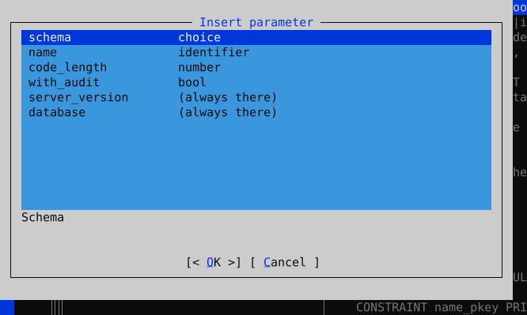
| Parameter | Inserted text |
|---|---|
text, number, sql, a choice with options or query | {{ comment }} |
identifier, a choice with a source | {{ name|ident }} — quoted as an identifier where PostgreSQL requires it |
bool | {% if with_audit %}, an empty line for the conditional text, {% endif %} |
list | The whole loop: {% for row in columns %}, a line with an expression per field and the separator between rows, {% endfor %} |
The loop of a list is a scaffold: it emits the fields one after another, to be arranged into the intended SQL. For
the columns of the picture above it inserts
{% for row in columns %}
{{ row.col_name|ident }} {{ row.col_type }} {{ row.not_null }} {{ row.primary_key }} {{ row.col_default }}{% if not loop.last %},{% endif %}
{% endfor %}The empty line is intentional: the environment uses trim_blocks, so a {% … %} tag at the
end of a line consumes the line break; the empty line restores it, and every row is rendered on its own line.
The context variables server_version (the server's server_version_num as an integer,
such as 170002) and database (the name of the current database) exist in every template
without a declaration.
Insert construct

| Construct | Inserted text | Purpose |
|---|---|---|
| if … endif | {% if %} … {% endif %} | Conditional text: emitted when a bool is true or a value is not empty. |
| if … else … endif | {% if %} … {% else %} … {% endif %} | Two alternatives. |
| for … endfor | {% for row in %} … {% endfor %} | Iteration over the rows of a list; the fields are row.name. |
| comma between rows | {% if not loop.last %},{% endif %} | Inside a loop: a separator after every row but the last. |
| value {{ … }} | {{ }} | An expression: a parameter, or any Jinja expression. |
| comment {# … #} | {# #} | A comment for the template's author; it is not rendered. |
| server_version check | {% if server_version >= 170000 %} … {% endif %} | Text for servers from a given server_version_num on. |
| has("…") | {% if has("NullsNotDistinct") %} … {% endif %} | A feature test against pgtc's feature table. One entry per feature, with the PostgreSQL version that introduced it. |
After the insertion the cursor is where typing continues — in the condition of an if, after
in of a for.
With a selection, the construct is wrapped around it. Select the lines to make conditional, press F7, , if … endif, and type the condition:
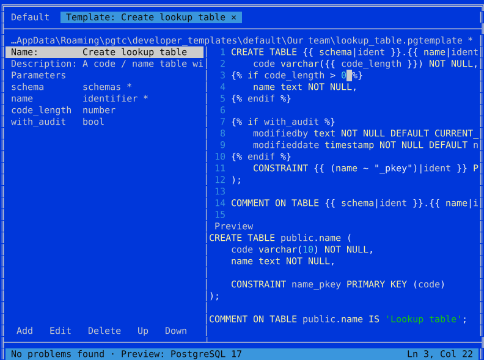
name text NOT NULL, was selected; if … endif was wrapped around it, and the
condition was typed. The preview follows.Insert filter

A filter transforms a value inside an expression: {{ name|ident }}. Where it is inserted depends on
the cursor:
- inside a
{{ … }}: appended to its expression —{{ name }}becomes{{ name|ident }}, wherever in the expression the cursor is; - with a selected word: the word becomes an expression —
ownerbecomes{{ owner|ident }}; - anywhere else: a new expression
{{ |ident }}, with the cursor at the place of the value.
| Filter | Result |
|---|---|
ident | The value as an identifier, double-quoted unless it is a lower-case name that is not a key word: Order Items → "Order Items". A value of a source → schema.name, each part quoted separately; a function keeps its argument list, a trigger its ON schema.table. Use it for every identifier. |
qtLiteral | The value as a string literal: O'Brien → 'O''Brien'; a value containing a backslash becomes an E'…' literal with the backslashes doubled; numbers and booleans stay unquoted; an undefined value gives NULL. Use it for text that goes into the SQL as a value, such as the text of COMMENT ON. |
qtTypeIdent | Quotes a type name as an identifier; multi-word type names such as double precision and timestamp with time zone stay unquoted, and an array suffix [] is kept. |
indent(4, true) | Indents every line of a text by 4 spaces, the first included — for a function body entered in a SQL box. |
default("") | A substitute for an undefined value. |
upper, lower, trim | Upper case, lower case, without leading and trailing whitespace. |
replace("a", "b") | Replaces a substring. |
join(", ") | The items of a sequence as one string, with a separator. |
length | The number of characters of a string, or of rows of a list. |
The list holds the filters most templates need; every other built-in filter of minijinja works as well — type it.
Make parameter from selection
The shortest way from a working statement to a template: paste the statement into the body, then turn the parts that vary into parameters.
- Select the text in the body.
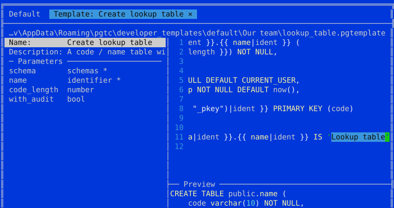
Lookup tableis selected in the last line of the body. - F7, . The parameter dialog opens with the
selected text as the Default. Give the parameter a name (and a label, a type …).

The new parameter: the selection is its default, so the template renders the same SQL as before. - Enter: the parameter is appended to the list, and the selected text is replaced by its
expression.
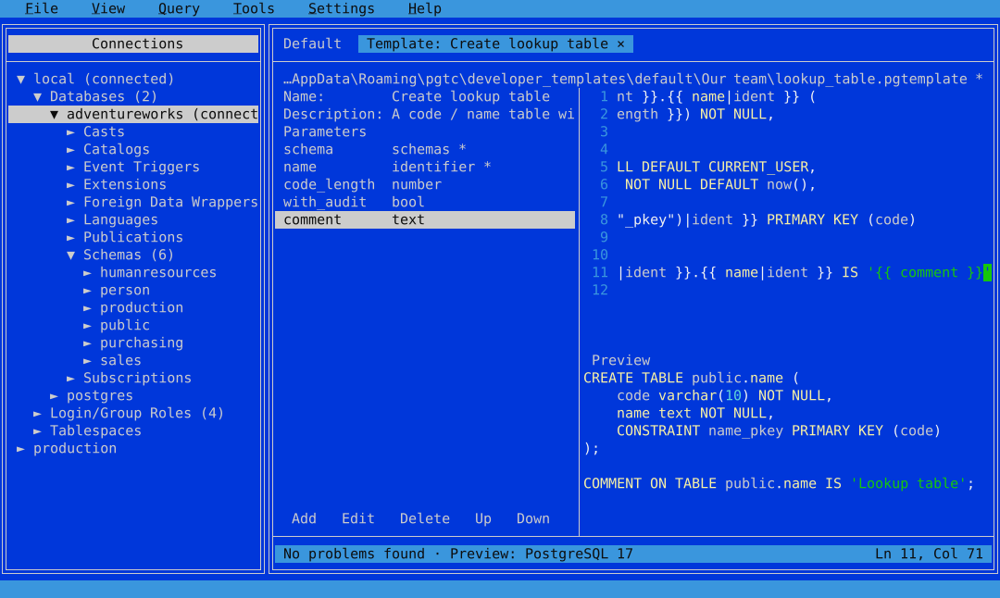
The parameter commentis in the list; the body has{{ comment }}in place of the text; the preview is unchanged.
A multi-line selection becomes a parameter of type sql. The item is enabled while the header is shown
as a list and the body has a selection.
Autocomplete in the body
The body has a completion popup with the keys of the popup of the query tabs. Its candidates come from the template itself, not from a catalog: the declared parameters, the fields of a list's rows, the filters, the Jinja statements. It needs no connection.
| Key | Action |
|---|---|
| Ctrl+Space, Alt+/ | Opens the popup at the cursor. |
| Up / Down, PgUp / PgDn | Select a candidate. Typing narrows the list. |
| Enter, Tab | Accept the candidate: it replaces the typed prefix. |
| Esc | Closes the popup (only the popup). |
The popup also opens automatically while typing: inside an expression or statement tag with the first
letter of a name, after a ., after a | and after has("; in the SQL outside the
tags after the third letter, as in a query tab.
In the SQL: a parameter as its whole expression

sch typed in the SQL: the parameter schema first, then the SQL key words
with that prefix.Outside the Jinja tags the candidates are the parameters and the SQL key words. Accepting a parameter
inserts its complete expression, the same text Insert parameter inserts: type
sch, Enter, and the body has {{ schema|ident }}. A bool gives its
{% if %} … {% endif %} block, a list its whole loop. The parameters come first,
in header order.
Inside a tag
| Cursor position | Candidates |
|---|---|
{{ … or {% if … | The parameters (with their type), the loop variables of the enclosing {% for %} loops and loop, variables assigned with {% set %}, server_version, database, has(", and the operators and constants not, and, or, in, is, true, false, none. Here a parameter is inserted as its bare name. |
row. | After the loop variable of a {% for row in list %}: the fields of that list parameter. |
loop. | last, first, index, index0, length. |
table. | After a choice with a source: the attributes of its value — schema, name; for functions and procedures also args, for triggers table. |
| | The filters, each with a short description; indent, default, replace and join are inserted with their arguments. |
{% | The statements: if, elif, else, endif, for, endfor, set. |
has(" | The feature names of pgtc's feature table, with the PostgreSQL version that introduced each. |

{% for c in columns %}, after c.: the five fields of a row of
columns, with their types.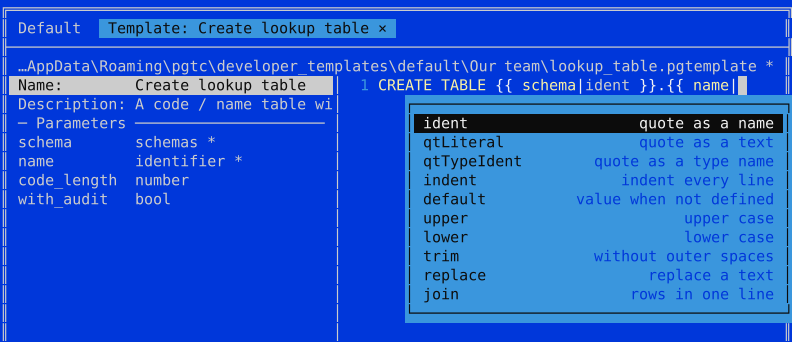
|: the filters.The candidates reflect the current declarations — add a parameter in the header list, and the body's popup has it. With the raw header shown, the parameters are parsed from its text (none while the TOML has an error).
Nothing is offered inside a comment {# … #} or inside a string literal (other than the feature name
of has("…")). Catalog objects — relations, columns — are not offered: a template tab has no session, and
a template seldom references concrete objects.
Preview and checks
The preview is the body rendered to SQL — again after every change of the body or the header. With no form to supply values, it renders with sample values:
| Parameter | Sample value |
|---|---|
with a default | The default. |
required, without a default | Its own name (name); for a number 1; for a schema-qualified source the object schema.name. |
| not required, without a default | Empty — the SQL as rendered when the user leaves the field empty. |
bool | Its default; false without one. |
list | One row; each field has its default, or else its own name. |
To render the template with other values, use Test.
What the status row says

{{ length }}, but the parameter is declared as code_length. The
status row: Not declared: length · Not used: code_length. The preview shows the consequence — the undefined
variable renders as an empty string: varchar().The checks are static: the header is validated as the file parser validates it, the body is compiled by minijinja, and the variables the compiled template references are compared with the declarations.
| Status row | Meaning |
|---|---|
| No problems found | The header is valid, the body compiles, every variable it references is declared, every parameter is referenced. |
| Not declared: … | Variables the body references that are neither parameters nor context variables (server_version, database). Usually a typing error or a renamed parameter. An undefined variable renders as an empty string. |
| Not used: … | Parameters the body never references. The form would ask for a value that has no effect. |
| Body, line N: … | A Jinja syntax error — an unclosed tag, an unknown statement. The preview shows the same message. |
| Header: … | An invalid declaration — a choice without values, a list without fields — or, in the raw header, a TOML error or an unknown key. |
| Preview: … | The body compiles but fails at rendering with the sample values: an unknown filter, an unknown feature name in has("…"). |
Not declared and Not used are warnings. Header, Body and Preview are errors: such a template is not saved and not tested. A rendering error is checked with the sample values of the preview, so an unknown filter in a branch the sample values do not reach is not found.

{% endfi %} instead of {% endif %}: the status row and the preview name the
line; the cursor was put there by the refused save.To go to a Jinja syntax error: focus the preview and press Enter — the cursor jumps to the reported line of the body. Ctrl+S and F5 do the same when they refuse the template.
The server version of the preview
A body can depend on the server version: {% if has("NullsNotDistinct") %},
{% if server_version >= 170000 %}. The status row names the version the preview is rendered for:
| Status row | When |
|---|---|
| Preview: PostgreSQL 17 | The row selected in the object tree belongs to a connected server: the preview uses that server's server_version_num. Select a row of another server to render the template for it. |
| Preview: PostgreSQL 16 (assumed) | No connected server is selected. For a file in a version folder such as 16_plus: the first version of that folder (160000). For a file in default: the newest version in pgtc's feature table, so that every has("…") is true. |
The raw header

Ctrl+T (also in the F7 and F2 menus) replaces the list by the header's text —
the TOML between the two +++ lines, exactly as written to the file.
All editor keys work in it. It suits bulk edits: duplicating a [[param]] table, renaming with find and
replace, pasting a header from another template.
Ctrl+T again returns to the list. That requires the text to parse: with an error the raw header stays, and the bottom line of the window and the status row report it (Header: …). The preview and the checks follow the text while you type.
pgtc serialises a header canonically: one key per line, in a fixed order (name,
label, type, required, default, help,
options, source, query, fill, then the fields), without comments —
the same declarations always give the same text. A hand-written header — aligned, with comments — is preserved
verbatim while you stay in the raw header, and also when only the body changes. Once something is changed in
the list and the template is saved, the header is written in the canonical form.
A template file whose header does not parse opens with the raw header shown, so that it can be repaired.
Test: the template in its form

F5 opens the template in the form of F7 — built from the tab's current text, saved or not. Everything behaves as described for the form: validation, lists with their row dialogs, SQL boxes, the help line, the live preview.
- OK and Esc only close the form. Nothing is inserted anywhere, and the rendered SQL is not executed.
- A template with a header or body error is not tested; the message names the error.
The choice lists of the test
A source or query needs a database to run against. A template tab has no session of its
own; the test uses the session the object tree holds on the selected database:
- Select a database of a connected server (or any object inside it) in the tree, then press F5: the
catalog queries run on that database, a custom
queryruns read-only as it does from F7, and the form takes its defaults from the tree's selection as it does in a query tab. The form is rendered for the preview's server version — here that server's. - The tree must already have a session on the database (expand its row once). Otherwise — and with a server
row or nothing selected — the drop-downs stay empty and show select a connected database in the object
tree. Fixed
options, and all other parameter types, work without a database.
Saving
Ctrl+S () saves the template. A template that has a file is written to it immediately; the file is replaced atomically, in the background.
The first save, and Save as

| Field | Meaning |
|---|---|
| Section | The existing sections, (no section) for a file directly in the version folder, and New section…. |
| New section | Used with New section…: the name of a section to create. Tables/Partitions creates a nested section. |
| Version folder | default: the file applies to every server version. 16_plus: to PostgreSQL 16 and newer (see variants). |
| File name | Proposed from the template's name: lower case, with _ for everything that is not a letter or a digit. Without .pgtemplate — pgtc appends it. |
The file is written to templates folder/version folder/section/file name.pgtemplate.
If that file exists, pgtc asks before overwriting it. A file that is open in another tab is refused.
(also in the F7 menu) shows the same dialog for a template that has a file: the tab is then bound to the new file, and the old file is left unchanged.
A template with an error is not saved

pgtc writes only templates it can parse back: a valid header and a body that compiles as Jinja. Otherwise the file is left untouched, the message names the error, and the cursor is placed on the reported line of the body. A file written by the editor therefore never appears as (error) in the F7 picker.
The built-in templates

A file is built-in if its path below the templates folder equals that of a template embedded in pgtc
(default/Tables/table.pgtemplate). overwrites
exactly those files, so a change saved into one is lost at the next install. pgtc therefore asks:
| Button | Action |
|---|---|
| Save as copy | Opens Save template with the file name …_copy. The tab is bound to the copy from then on; the original is left unchanged. Give the copy another Name, too. Recommended. |
| Save anyway | Writes the built-in file. pgtc does not ask again while this tab is open. |
| Cancel | Does not save. |
Closing a tab with changes

Closing a template tab with unsaved changes prompts as a query tab does: Yes saves and closes, No discards the changes, Cancel keeps the tab. Quitting pgtc prompts for every modified template. If the save is refused — the template has an error — the tab stays open.
(The prompt can be turned off for query tabs and template tabs together: , Ask to save query tabs when closing.)
Variants for server versions
Most templates apply to every supported server. Where the SQL differs slightly between versions, a
version or feature test in the body is sufficient. Where it differs substantially, the
template can have a variant: a file with the same section and file name in a
version folder N_plus. F7 resolves the template by the
major version of the tab's server: the N_plus folder with the highest N not above it, else
default. With a variant in 16_plus, servers of PostgreSQL 16 and newer get that file, older
servers the one from default.
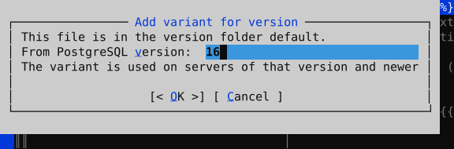
- Open the template (it must have a file — save a new one first).
- F7, , type the first major version the variant applies to, Enter.
- A second tab opens with a copy of the template; its file bar shows the path in the new version folder, marked
*. Change what differs, and save with Ctrl+S. The file is created only then.
If the template already has a variant for that version, its tab is opened instead. In the manager, each variant has its own row, and Delete removes just that file.
The preview of a variant is rendered for the first version of its folder (while no connected server is selected), so it shows what the newer servers get.
Keys of the template tab
| Key | Context | Action | Command |
|---|---|---|---|
| Ctrl+S | Everywhere in the tab | Save | save_file |
| F5 | Everywhere in the tab | Test the template in its form | template_test |
| F7 | Everywhere in the tab | Helper menu | template_helpers |
| Ctrl+T | Everywhere in the tab | Parameter list / raw header | template_raw_header |
| Alt+Down / Alt+Up | Everywhere in the tab | Next / previous part | focus_lower, focus_upper |
| Ctrl+R | Everywhere in the tab | Hide / show the preview | toggle_results |
| Alt+Shift+Up / Alt+Shift+Down | Everywhere in the tab | Preview smaller / larger | results_smaller, results_larger |
| Tab / Shift+Tab | Header list, preview | Next / previous part | next_field, prev_field |
| Enter | Header list | Edit the name, the description or the parameter | template_edit_param |
| Insert | Header list | Add a parameter | template_add_param |
| Delete | Header list | Delete the parameter | template_delete_param |
| Ctrl+Up, Shift+Up | Header list | Move the parameter up | template_param_up |
| Ctrl+Down, Shift+Down | Header list | Move the parameter down | template_param_down |
| F2 | Header list | Context menu | context_menu |
| Enter | Preview | Go to the line of the body's syntax error | |
| Ctrl+Space, Alt+/ | Body | Autocomplete: parameters, fields, filters, statements | complete |
| The editor keys | Body, raw header, preview | Movement, selection, clipboard, undo, find |
The bindings of the header list, and F5, F7 and Ctrl+T, are in the
[template] table of keymap.toml. The items of the helper
menu have no default bindings; their commands can be bound: template_insert_param,
template_insert_construct, template_insert_filter, template_make_param,
template_add_variant — and template_manager for the manager.